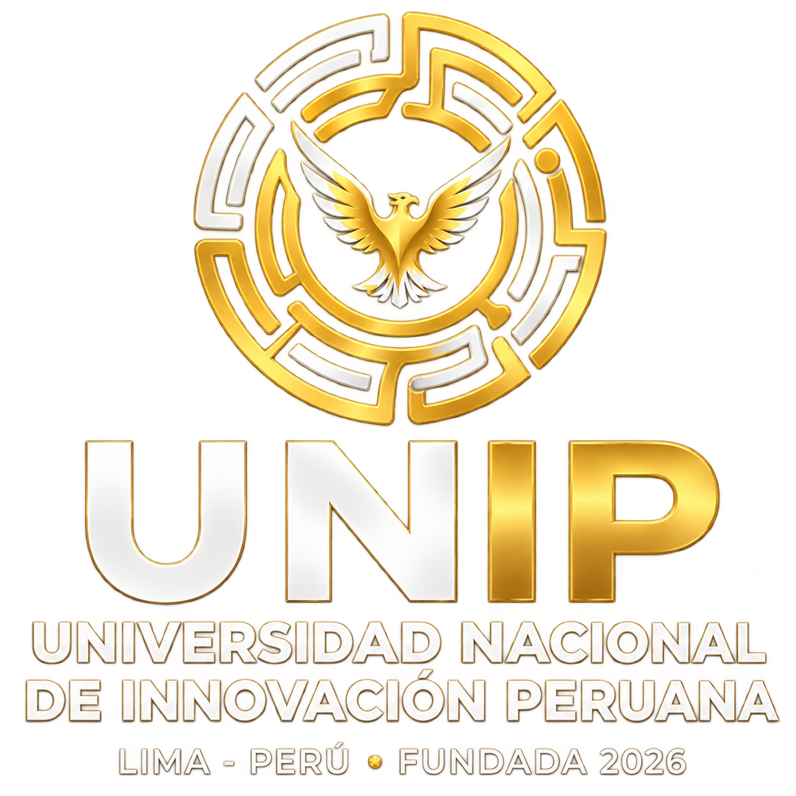
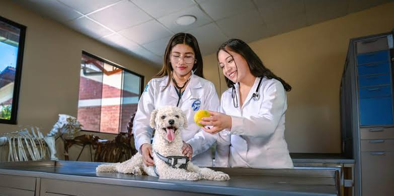

Información General
Somos una institución universitaria comprometida con la excelencia educativa y tecnológica.

UNIP - Innovación PeruanaBienvenidos a la propuesta académica de nuestra institución.
Formamos profesionales preparados para los retos del futuro.
Somos una institución universitaria comprometida con la excelencia educativa y tecnológica.
Misión: Educación superior de calidad orientada a la práctica.
Visión: Liderazgo en innovación digital.
Fundada en 2026, hemos formado a más de 1000 profesionales en tecnología, negocios e ingeniería.
Laboratorios equipados, biblioteca digital, aulas inteligentes y espacios de innovación.
Diseño y desarrollo de sistemas informáticos.
Gestión corporativa y dirección estratégica.
Programas de actividad física y salud deportiva.
Optimización de procesos productivos y logísticos.
Atención y cuidado clínico animal.

Evaluación y bienestar emocional y social.
Asegura tu futuro profesional y únete a la nueva generación de líderes e innovadores tecnológicos. Nuestro proceso es rápido y 100% en línea.